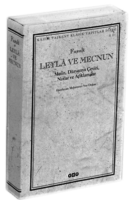

Leyla ile Mecnun ve Hüsn ü Aşk Yanlış Çevrildi!
Muhammed Nur Doğan, metinlere bir şair duyarlılığı ve gözüyle yaklaşmak gerektiğini söylüyor. Yoksa şairin zengin hayal dünyasının çevirilerde kupkuru bilgi yığınına dönme ihtimali var ve öyle de oluyor: “Abdülbaki Gölpınarlı’nın Hüsn ü Aşk’ında olduğu gibi çeviri ansiklopedik, üstelik birçok yanlışlığı içinde barındıran bir eser olmaktan öteye gidemiyor.”
“Gül, bilinen çiçek. Kırmızı, beyaz, sarı... Gül Farsça bir kelime. Farsçada çiçek demek, yani bütün “flora”yı kapsıyor. Mumun ya da kandilin sönmüş ve kararmış fitilinin ucuna da gül deniyor. Bu kadarla sınırlı değil. Sözgelimi ünlü divân şairi Bâki “gül”ü altın para anlamında kullanmış. Hatta filori denilen, Floransa’da basılan, üzerinde çiçek kabartması bulunan altın paraya da gül denilmiş, dolara “yeşil” denmesi gibi...” Muhammed Nur Doğan, gül kelimesine yüklenen, pek çoğu lügatlere bile girmeyen anlamları sıralıyor. Sorun ortada... Şairin şiirde üçüncül, dördüncül anlamını kastederek kullandığı kelimeyi birincil ya da ikincil anlamda kullandığınız zaman beyitin anlamı değişiyor ya da ‘anlamlı bir ifade’ çıkmıyor ortaya.
İstanbul Üniversitesi Edebiyat Fakültesi Klasik Türk Edebiyatı Profesörü Muhammed Nur Doğan, Fuzuli’nin Leyla ile Mecnun’u ile Şeyh Gâlip’in “Hüsn ü Aşk”ının anlaşılamadığını, anlama gayretleriyle bugüne kadar yapılan çevirilerin de yüzde 80-90 gibi büyük bir oranda yanlış olduğunu iddia ediyor. İddia etmekle kalmıyor her iki eserin doğru çevirilerini de yayınlıyor. Leyla ile Mecnun Yapı Kredi Yayınları’ndan çıktı; Hüsn ü Aşk da aynı yayınevinden yakında çıkacak. “Bunlar okunmazsa anlaşılmaz” dediği notların sayısı Leyla ile Mecnun’da 170 iken, (Leyla ile Mecnun’dan bin beyit kısa olmasına rağmen) Hüsn ü Aşk’ta, 500. Yani Fuzuli’nin eseri yanlış okunmuştur ama Şeyh Gâlip’in “fantastik” eseri çok daha büyük bir hataya, yanlış okumaya maruz kalmıştır.
Prof. Dr. Muhammed Nur Doğan örneklerle Leyla ile Mecnun’un nasıl yanlış çevrilmiş olacağını anlatıyor.
Yanlış okumadan ya da çeviriden kastedilenin ne olduğunu açıklamak için her iki eserden birkaç örnek veriyor. Burada sadece Hüsn-ü Aşk’tan bazı örneklere yer vereceğiz.
Bed reng ise de kumaş-ı Evren
Kalmaz yine kâle-i Halep’den
Bu beyit Şeyh Galip’in Hüsn ü Aşk’ında geçiyor. En çok bilinen Şeyh Galip çevirisi yapan Abdülbaki Gölpınarlı, bu beyiti “Evren kumaşı her ne kadar hoş olmayan bir renk taşıyorsa da, Halep kumaşından geriye kalmaz” olarak çeviriyor. Muhammed Nur Doğan önce “evren kumaşı”na takılmış. “Abdülbaki Gölpınarlı’nın çevirisi de dahil olmak üzere yapılan bütün çevirilerde evren kumaşı olarak yer alıyor. Sonra biz araştırdık. Bunun Evren değil, Evreng olduğunu, o dönemde Evreng olarak değil de evren olarak telaffuz edildiğini, “Evreng”in de Hindistan’da bir şehir olduğunu ve bu şehirde çok iyi hint kumaşı üretildiğini, tezgahlarıyla ünlü olduğunu öğrendik. Bu şu anlama geliyor; Şeyh Galip o günlerde hakkında övgüyle bahsedilen Nabi’nin “Hayrâbât”ına karşı olarak Hüsn ü Aşk’ı yazıyor. Söz konusu beyitten 20 beyit önce, Nabi’nin Hayrâbat’ından söz açarak onun hakkında olumsuz kanaatlerini öne sürüyor. Halep, Osmanlı kumaşlarının üretildiği önemli bir dokuma merkezi, Nabi de Haleplidir. Kendisi ise “sebk-i Hindi” denilen, klasik edebiyattan ayrılan, hatta klasik zevkle uyuşmayan bu üslupta yazmaktadır. Kendi şiirini Hint kumaşına benzetirken, klasik zevklere hitap etmesi, bir de Halepli olması nedeniyle Nabi’nin şiirini Halep kumaşına benzetmektedir.” Yani Evren kumaşı denilerek hiçbir anlam ifade etmeyecek şekilde çevrilen beyit, gerçekte Nabi ile Şeyh Gâlip arasındaki “polemiği” yansıtmaktadır. Bu arada, Muhammed Nur Doğan’ın Evreng’in Hint kökenli bir kumaş türü olduğunu öğrenmesi için pek çok kaynağa ve çalışmaya başvurması gerekmiş.
Hz. Süleyman, Cemşit oldu
Bedr etti esâs-ı subhı te’sis
Manzûr-ı Cem oldı taht-ı Belkıs
Cem denildiğinde İranlıların şarabı icad eden meşhur hükümdarı Cemşit akla geliyor. Zaten dipnotta ‘falanca sülaleden 3. hükümdar’ diye de belirtilmiş. Fakat Cem, İran kaynaklarında Hz. Süleyman için kullanılırmış. Prof. Muhammed Nur Doğan “Taht var, Belkıs var, Cem’in diğer anlamlarından biri Hz. Süleyman. Hiç mi akıllarına gelmedi buradaki Cem’in Hz. Süleyman olduğu” diye soruyor haklı olarak.
Şüphe olmadan olmaz
Klasik edebiyat uzmanı Muhammed Nur Doğan verdiği bu iki örneğin istisna olmadığını söylüyor. Fakat bu, eserin bütününü nasıl etkiliyor? “Bu yanlışlıklar tamamen bir anlam kaymasına yol açıyor. Kelimelerin nüansları doğru tespit edilmeden tercüme edilirse taban tabana zıt, hatta saçma denilebilecek çevirilerle karşı karşıya kalıyoruz. Öyle ki, Fuzuli gibi dünya çapındaki bir şair bu saçma sapan şeyi nasıl söyleyebilir diyorsunuz. Bir yere oturtamıyorsunuz. Şairleri de haksız töhmetlerin altında bırakıyoruz.” Muhammed Nur Doğan’a göre bilimsel çalışmalarda ‘şühhe’ terk edildiğinde, yani yapılan çalışmalar insana tatmin vermeye başladığında yanlışlıklar başlıyor. Artık yeni şeyler bulmak ve geliştirmek mümkün olmadığı gibi eski yanlışlıklar da tekrar ediliyor. Araştırmacılar çoğunlukla kolayı seçmiş ve derinliksiz, sığ çalışmaların ortaya çıkmasına yol açmışlar. Nur Doğan, kendi çalışmalarının çok kolay olmadığını, bazen fakültedeki arkadaşlarını da işin içine kattığını söylüyor. Hasılı Hüsn ü Aşk’taki bazı beyitlerin çözülmesi altı ayı almış söylediğine göre.
Din, dil, şiir...
Fakat bu iddiayı dile getirirken bundan önce çalışma yapan kişileri de töhmet altında bırakmak istemiyor. Gereken dikkatin ve araştırmanın yapılmadığını, çeviricinin yaptığı anlamlandırma çalışmalarındaki yanlışlıkların zincirleme olarak devam ettiğini, çevirilerden hareketle bu eserler hakkında “alegorik eser”, “mevlevi çilesini anlatıyor” gibi genel ve yanlış hükümler verildiğini söylüyor. Elbette bunun düzelmesi gerekmekte...

Söz konusu eserlerin iyi anlaşılabilmesi için araştırmacıların “olmazsa olmaz” kabilinden bazı özelliklere sahip olması gerekiyor. Bu “özellikleri” üzerinde çalışma yapılan metinler belirleyecektir. “Klasik edebiyat çok kültürlü, çok dilli, çok dinli, çok etnik unsurlu, geniş ve değişik coğrafi zeminden beslenen bir edebiyat. Bizim lügatlerimize bile girmemiş kelimeler olduğu gibi, çok farklı anlamlarda kullanılan fakat sadece birinci ya da ikinci anlamlarıyla iktifa edilen kelimeler de var. Şairler kelimelerin hem hakiki hem de mecâzi anlamlarını, bazen de her ikisini birden kastederek kullanırlar. Hatta beyit içerisinde iki üç kelimenin farklı ikişer, üçer anlamlarını da birlikte kullanmak suretiyle çok anlam katmanlarına sahip şiirler yazarlar. Bu, bizim şairlerin en önemli özelliklerinden birisidir.”
Çevirmek kolay değil
“Kelimeler geçmişte, genellikle, bugünkü lügatlere girmemiş anlamları ihtiva etmekteydiler.” Yani bugün altın paraya ya da floriye gül denmediği, lügatlerde de bu anlamıyla yer almadığı gibi. Muhammed Nur Doğan’a göre kültür inkılabıyla birlikte eski kültürden yoğun bir kopuş yaşanmıştır. Değişen örf, âdet, gelenek, hayata bakış, dini ve felsefi telakkilerle birlikte pek çok kelime kaybolmuş; kalanlar da “zengin” anlam dünyasını kaybetmiştir. Dolayısıyla kelimelerin eski zamanlarda kullanılan “öteki” anlamlarını “çıkartabilmek” için sınırlı sayıda lügate bağımlı kalmamak, Türkçe, Farsça, Arapça edebi metinlere vakıf olmak, Kur’an, Hadis, Sünnet, Kelam, Siyer gibi bütün İslami bilgi disiplinlerini bilmek hatta İslam tarihine, İslamdan önceki Arap, Fars, Türk kültür ve tarihine ve meselelerine aşina olmak gerekmektedir. “Baş kaynak olan Kur’an’ın estetiğine, Kur’an’ın anlam zenginliğine vâkıf olmak gerekir. Çünkü Divân şairleri, Kur’an-ı Kerim’i sadece bir bilgi ve inanç kaynağı olarak değil, aynı zamanda estetik örneği olarak algılamışlardır. ”
Muhammed Nur Doğan, bütün bunların yanında, bu metinlere bir şair duyarlılığı ve gözüyle yaklaşmak gerektiğini de söylüyor. Yoksa şairin zengin hayal dünyasının çevirilerde kupkuru bilgi yığınına dönme ihtimali var ve öyle de oluyor: “Abdülbaki Gölpınarlı’nın Hüsn ü Aşk’ında olduğu gibi çeviri “açılama” adı altında kuru ansiklopedik bilgiler veren, üstelik birçok yanlışlığı içinde barındıran bir eser olmaktan öteye gidemiyor.”
(Aksiyon 332. sayı)